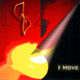

| Artist: | Izz |
| Title: | I Move |
| Label: | Doone Records DR2-669563 |
| Length(s): | 73 minutes |
| Year(s) of release: | 2002 |
| Month of review: | [08/2002] |
| 1) | Spinnin' Round | 2.59 |
| 2) | I Move | 5.24 |
| 3) | Weak Little Lad | 3.50 |
| 4) | I Already Know | 3.55 |
| 5) | I Wanna Win | 5.46 |
| 6) | All The New | 1.24 |
| 7) | Star Evil Gnoma Su | 8.37 |
| 8) | Another Door | 4.42 |
| 9) | Something True | 2.37 |
| 10) | Believe | 3.33 |
| 11) | Knight Of Nights | 6.37 |
| 12) | The Mists Of Dalriada | 2.42 |
| 13) | Oh, How It's Great! | 4.46 |
| 14) | Coming Like Light | 11.40 |
| 15) | Light From Your Eyes | 4.24 |
On Weak Little Lad the band keeps the music subdued, where a band such as Spock's Beard is more likely to take the high road. Gurgling keyboards, the subdued, somewhat No-Man like feel (or Henry Fool is you like) with modern rhythms abounding, but also some warm organ brimming. We move right into I Already Know. This is a slow moving ballad with similarities to the ballad side of Salem Hill. A moody tune this one with again a strong vocal melody, and a soaring guitar solo to boot. It is striking though that the band never really rocks out.
With an easy transition we move into the murk of I Wanna Win. Drum programming, a very electronic feel dominate the first part of this track, but then the music starts to rock with the vocals becoming a bit louder for a change, these parts do liven the track up. The funky guitar lines and bass are generally in charge here. Part halfway we move into more symphonic waters with a passionate melodic guitar line. The emotions evoked are similar to those evoked by Spock's Beard I must admit, but Izz continue to avoid going over the top.
After the shortish All The New we move into the instrumental sidekick Star Evil Gnoma Su, which opens with Frippish guitar and dissonant piano. Then the music turns for the cosmic and melodic. The King Crimson ar quite strong on the whole, especially in the guitar playing. All in all a bit fiddly, but still a welcome change from the vocal tracks and probably nice to play live as well. A complex track with the guitarist and keyboardist both having their place to roam. I can imagine people who like the vocal tracks very much not to dig this side of the band. Maybe the band is saying, hey, it's not that we can't make fiddly instrumentals like everybody else, but we simply want to make other music....usually.
Back to the vocal tracks with Another Door with its lamentable jazzy undertones. Yes, it's sad ballad time. In the middle, the energy goes up a bit, the vocals shift into a higher register, but then we are back to the easy-goingness of before. The guitar solo is a bit meandering, the music plodding because of the accompanying piano. Believe has some angelic vocals in the beginning. This is peaceful music with subtle acoustic guitar. The male vocal parts here are rather British.
Knight Of Nights is a more powerful track with frolic keyboards and generally a medieval feel. After three minutes or so we break into something dark, after which the music starts up again, this time with military drums and "violins". It does seem that the band is not that well at home in a more symphonic piece such as this. After the up tempo folk of The Mists Of Dalriada with some rocking guitars, I Move into Oh, How It's Great! with its Beatles influences and the vocals echoing through my head. This is also the place where the Spocks Beard feel returns and is quite strong. A hasty, happy piece with some great shredding guitar playing turning really bombastic towards the end (so they CAN do it). Washes of keyboards make for another nice climax in this very symphonic track.
Playful piano opens Coming Like Light. Then the band takes a run with it, with bouncy rhythms, very frolic and diverse. This is a rather complex piece, quite harrowing at times and similar in diversity as Star Evil Gnoma Su. Only after a minute or six do we finally get to hear vocals. These vocals are a bit hazy, lined by dancing piano, after which a whispy guitar and prominent bass add themselves to the chorus. The vocal melodies are in a way very Yes like. There is also something of the optimism of Yes in the music. Later we get a chorus of vocals singing through or with each others. This is a really nice part to this track.
The final track is Light From Your Eye, which has a somber guitar sound and somewhat Britpop like vocals.